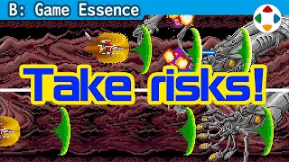
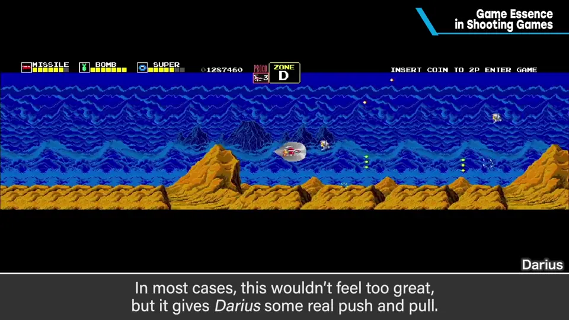
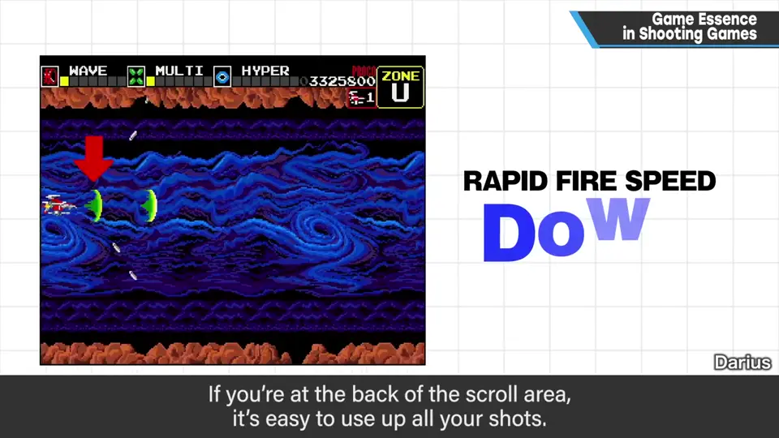
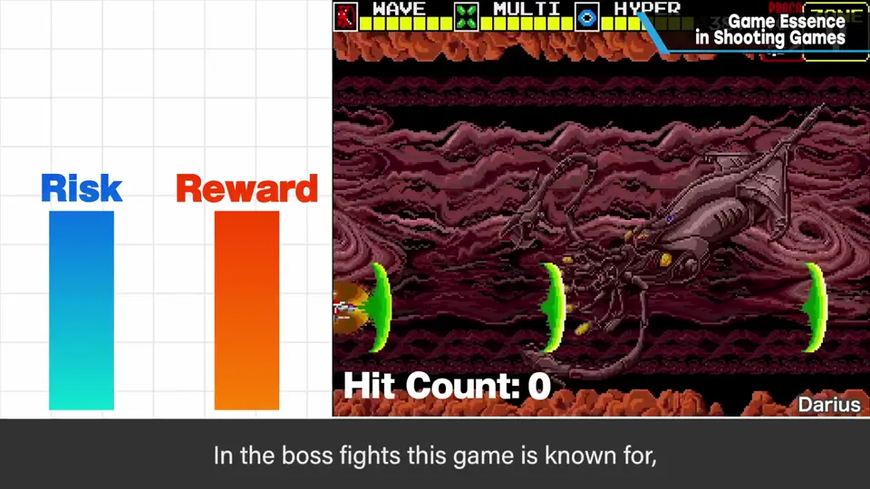
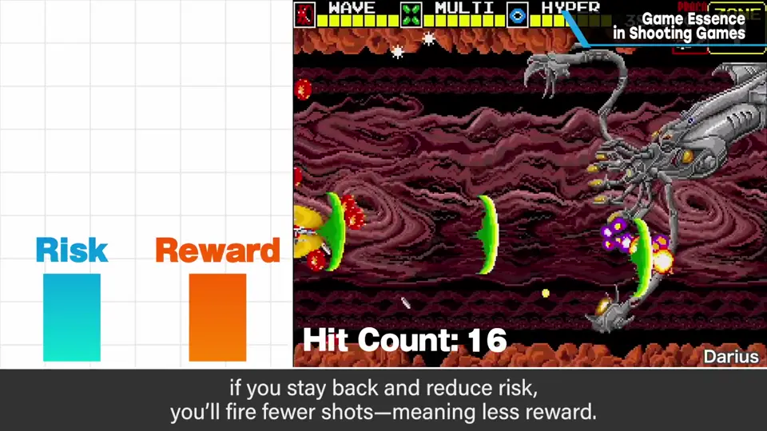
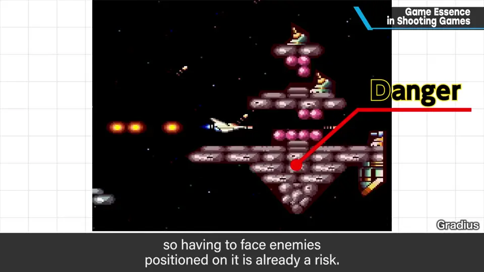
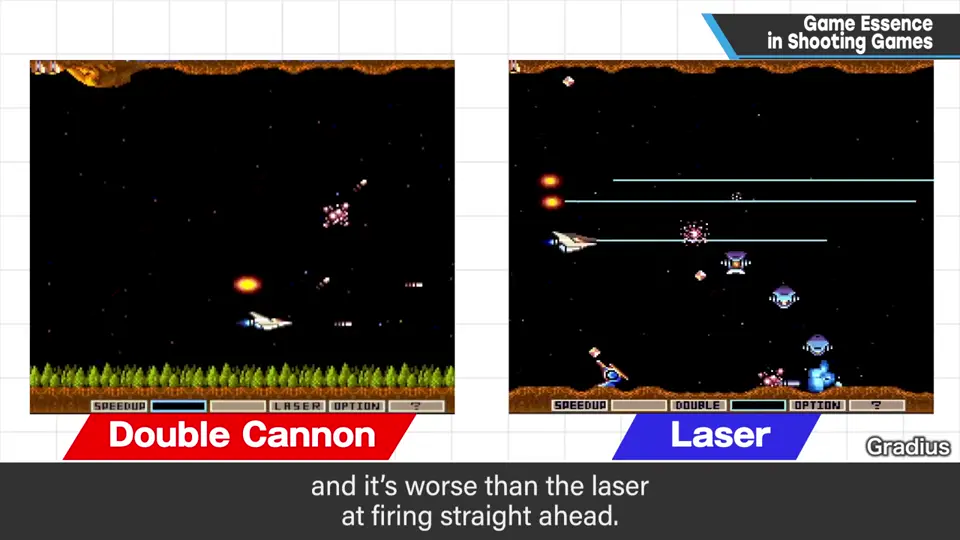
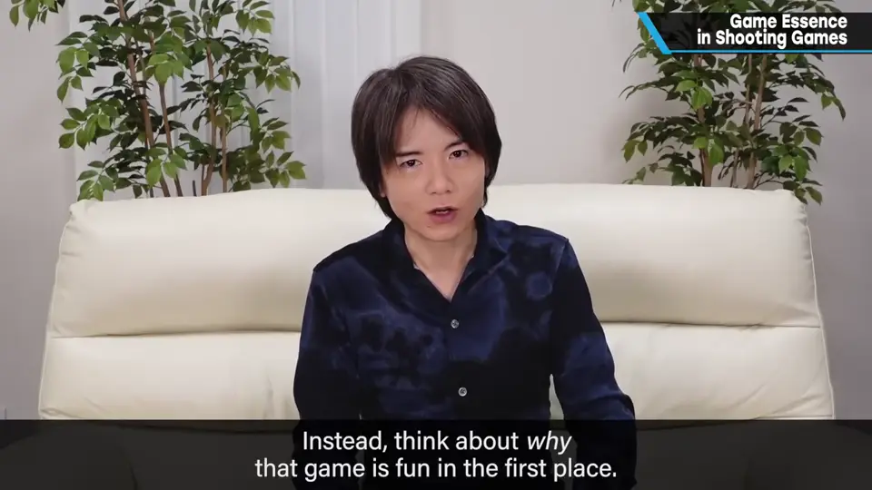

速览
本类别开头用《太空侵略者》讲过游戏性与博弈的大前提（推荐先看）。这次用传统射击游戏的具体例子再深挖：如果「冒风险得回报」是博弈/游戏性的基本，那么看看《Darius》：画面横长，画面上同时能出现的子弹少，常常打不出子弹。通常子弹打不痛快就不爽，但它成功产生了博弈：在卷轴后方容易断弹，在前方则连射很强；炸弹也一样，越靠近敌人和地形越能连射。Boss 战是卖点：远离敌人、风险低时，命中弹数少、回报也少；贴近 Boss 就能狂射、快速击倒。在《Gradius》等强化型射击中，碰到就失误的地形旁有敌人本身就是风险，打倒它就是回报；在地形旁配置强化道具，以及不靠近地形也能打倒敌人的武器各有一长一短，扩展了游戏性——例如 Double 容易打上方敌人，但只有单发、向前的攻击远不如 Laser。承受哪个缺点、换取哪个优点，对所有作品都有效。能把画面上的敌人通通打倒会很爽，但难产生博弈；游戏性高不是一切，太执着也会损失华丽感或变麻烦。但想做与众不同的游戏，就别单纯模仿，想想它为什么有趣。
1. 《Darius》：越靠前，火力越强 0:02
本类别开头用《太空侵略者》讲过游戏性与博弈的大前提（推荐先确认）。这次以传统射击游戏为例深挖：如果「冒风险得回报」是博弈/游戏性的基本——
看看《Darius》：画面横长，画面上能出现的子弹数少，常常断弹。一般来说子弹打不痛快就不爽，但它成功地产生了博弈。


- 在卷轴后方容易断弹；在前方则连射很强。
- 炸弹也一样：离敌人和地形越近越能连射，越远越射不出来。
这款游戏以 Boss 战为卖点：远离敌人、降低风险时，命中弹数少、回报也少；贴近 Boss 则能不断连射，更快击倒。


2. 《Gradius》：地形与武器的取舍 1:19
- 在《Gradius》等强化型射击中，碰到就失误的地形旁边有敌人，这本身就是风险；漂亮地打倒就是回报。
- 地形旁配置强化道具，以及「不靠近地形也能打倒敌人」的武器各有一长一短，游戏性因此变广。
- 例：Double 更容易打倒上方的敌人，但只能单发，向前攻击远远不如 Laser。


3. 想想它为什么有趣 2:00
画面上的敌人全都能打倒会很痛快，但难以产生博弈。不过游戏性高不是一切，那样也可以；太执着于游戏性，有时会损失华丽感，甚至变麻烦。
但如果想做与众不同的游戏，就别单纯模仿某个游戏，想想它为什么让人觉得有趣。

自测题
1. 《Darius》怎样用「子弹少」产生博弈？
画面上能同时存在的子弹少：待在后方易断弹，靠前（靠近敌人和地形）连射更强；Boss 战中贴近才能大量命中、快速击倒。 0:49
2. 在《Gradius》中，Double 与 Laser 的取舍是什么？
Double 更容易打上方的敌人，但只能单发、向前攻击远不如 Laser——承受哪个缺点换取哪个优点，就是游戏性。 1:45
3. 能把画面上所有敌人都打倒，有什么问题？
很痛快，但难以产生博弈；不过游戏性高也不是一切。 2:03